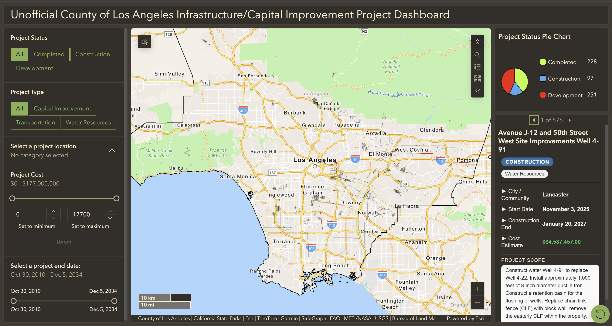

Unofficial County of Los Angeles Infastructure (ArcGIS Dashboard)
Interactive dashboard exploring various infrastructure projects of Los Angeles. I created this using ArcGIS Dashboards so that I could practice my ArcGIS Online skills and get familiar with the variety of apps ESRI offers. This map was heavily inspired by LA County Public Works' Infrastructure Dashboard, which is linked on the splash page when you open the dashboard.
Open dashboard in new tab